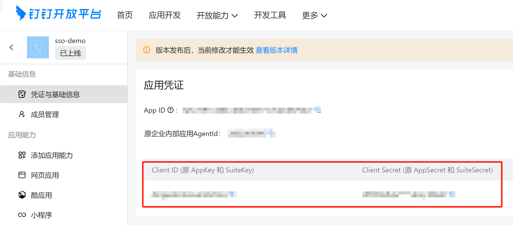
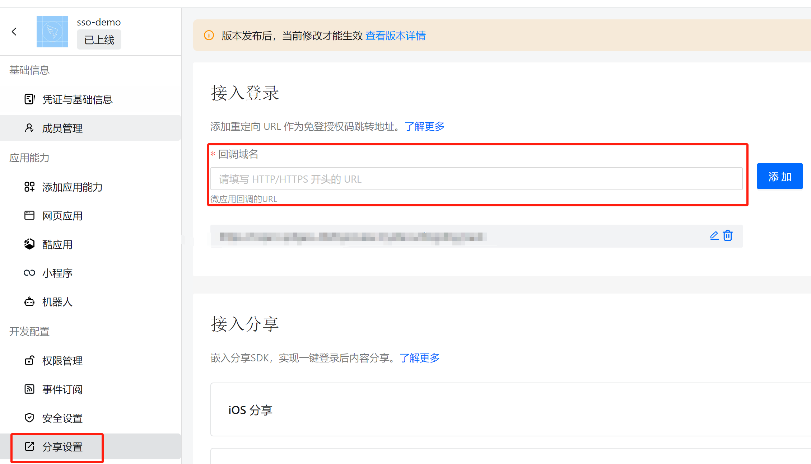
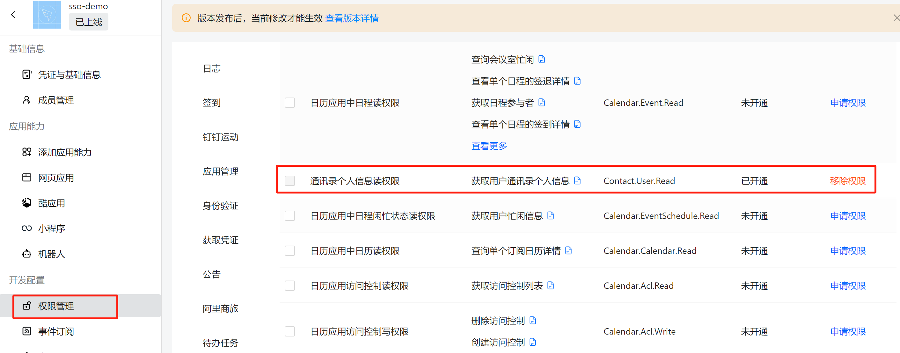
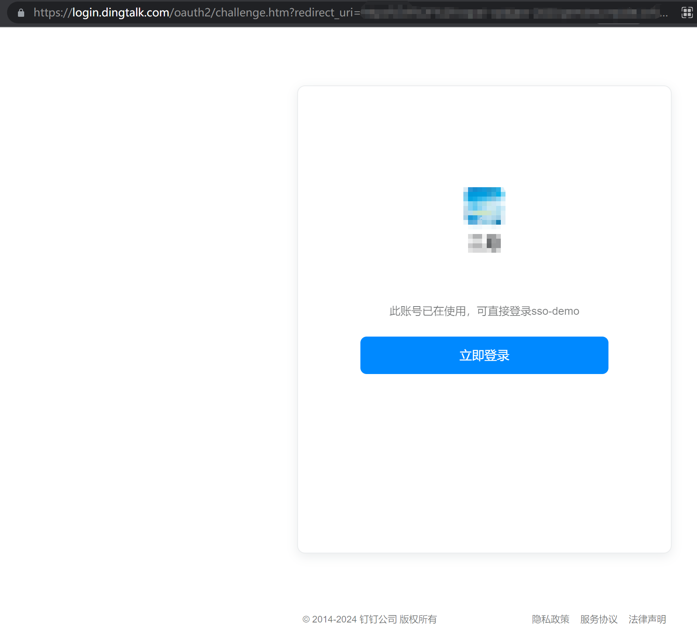
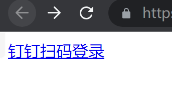
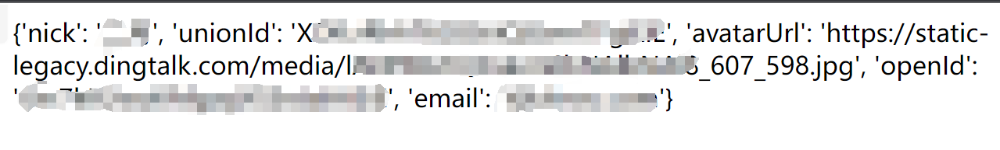

准备工作#
- 首先需要安装好python环境，下载好flask库
- 注册钉钉开放平台，进入应用开发界面，创建企业内部应用
- 记录好创建的应用的
Client ID (原 AppKey 和 SuiteKey)和Client Secret (原 AppSecret 和 SuiteSecret)这两个数据

流程分析#
本文一共需要使用到3个钉钉的api接口，分别是钉钉的页面登录授权、获取用户token接口和获取用户个人信息的接口。
用户使用流程为，点击钉钉登录的超链接，此处为构造的钉钉登录授权页面url，用户使用钉钉账号登录后，带着code数据跳转至开发者设置的回调url中，开发者通过传过来的code使用钉钉接口获取用户tonken，然后再通过token来获取用户的个人信息（包含用户对于当前应用的唯一标识unionid），接着就可以按照登录成功的逻辑进行处理了。
具体实现#
构造钉钉登录授权页面url#
按照钉钉开发者文档的要求进行构造，redirect_uri参数填写urlencode编码后的回调网址，client_id参数填写上文提到的应用的Client ID (原 AppKey 和 SuiteKey)即可，
1
2
3
4
5
6
7
|
https://login.dingtalk.com/oauth2/auth?
redirect_uri=https%3A%2F%2Fwww.aaaaa.com%2Fauth //换成自己的回调网址，需要进行urlencode
&response_type=code
&client_id=dingxxxxxxx //应用的AppKey
&scope=openid //此处的openId保持不变
&state=dddd
&prompt=consent
|
钉钉开放平台配置#
进入钉钉开放平台应用管理，找到分享设置，在回调域名处填写好回调域名保存。

再找到权限管理处，开通通讯录个人信息读权限的权限。

钉钉开放平台配置就完成了。
使用flask构建web服务#
需要使用flask构建两个页面，第一个是将我们构造好的钉钉登录授权页面的url插入其中，第二个页面路径必须是自己设置的回调网址。简要代码如下。
1
2
3
4
|
页面一
@app.route('/')
def index():
return '<a href="https://login.dingtalk.com/oauth2/auth?redirect_uri=https%3A%2F%2Fwww.aaaaa.com%2Fauth&response_type=code&client_id=dingpoksntxzuqmbz5oq&scope=openid&prompt=consent">钉钉扫码登录</a>'
|
第一个页面构建好了之后部署测试下能否成功进入钉钉登录授权页面，成功的话如下图所示。

页面二编写接收到code后的业务逻辑代码，实现通过code获取用户token，接着通过token获取用户的个人信息，别忘了将里面的appid和appsecret换成准备工作提到的两个数据。
1
2
3
4
5
6
7
8
9
10
11
12
13
14
15
16
17
18
19
20
21
22
23
24
25
26
27
28
29
30
31
32
33
34
35
36
37
38
39
|
页面二
@app.route('/auth')
def auth():
# 捕获code
code = request.args.get('code')
# 获取access_token，有效期2小时
access_token = get_access_token(code)
# 获取user_info
user_info = get_user_info(access_token)
# 返回个人信息
return str(user_info)
def get_access_token(code):
appid = 'xxx'
appsecret = 'xxx'
token_url = "https://api.dingtalk.com/v1.0/oauth2/userAccessToken"
json_data = {
"clientId" : appid,
"clientSecret" : appsecret,
"code" : code,
"grantType" : "authorization_code"
}
res = requests.post(token_url, json = json_data)
res_dict = json.loads(res.text)
access_token = res_dict.get('accessToken')
return access_token
def get_user_info(access_token):
headers = {
'Content-Type': 'application/json',
'x-acs-dingtalk-access-token': access_token
}
res = requests.get('https://api.dingtalk.com/v1.0/contact/users/me', headers = headers)
res_dict = json.loads(res.text)
# unionid = res_dict.get('user_info').get('unionid')
# print("unionid为{}".format(unionid))
# return unionid
return res_dict
|
简单整理一下，完整代码如下。
1
2
3
4
5
6
7
8
9
10
11
12
13
14
15
16
17
18
19
20
21
22
23
24
25
26
27
28
29
30
31
32
33
34
35
36
37
38
39
40
41
42
43
44
45
46
47
48
49
50
51
|
from flask import Flask #导入Flask类
from flask import request
import time, requests, urllib, json
app=Flask(__name__) #实例化并命名为app实例
@app.route('/')
def index():
return '<a href="https://login.dingtalk.com/oauth2/auth?redirect_uri=https%3A%2F%2Fwww.aaaaa.com%2Fauth&response_type=code&client_id=dingpoksntxzuqmbz5oq&scope=openid&prompt=consent">钉钉扫码登录</a>'
@app.route('/auth')
def auth():
# 捕获code
code = request.args.get('code')
# 获取access_token，有效期2小时
access_token = get_access_token(code)
# 获取user_info
user_info = get_user_info(access_token)
# 返回个人信息
return str(user_info)
def get_access_token(code):
appid = 'xxx'
appsecret = 'xxx'
token_url = "https://api.dingtalk.com/v1.0/oauth2/userAccessToken"
json_data = {
"clientId" : appid,
"clientSecret" : appsecret,
"code" : code,
"grantType" : "authorization_code"
}
res = requests.post(token_url, json = json_data)
res_dict = json.loads(res.text)
access_token = res_dict.get('accessToken')
return access_token
def get_user_info(access_token):
headers = {
'Content-Type': 'application/json',
'x-acs-dingtalk-access-token': access_token
}
res = requests.get('https://api.dingtalk.com/v1.0/contact/users/me', headers = headers)
res_dict = json.loads(res.text)
# unionid = res_dict.get('user_info').get('unionid')
# print("unionid为{}".format(unionid))
# return unionid
return res_dict
if __name__=="__main__":
app.run(port=8080,host="127.0.0.1",debug=True)
|
部署好并启动服务进行访问，会有钉钉扫码登录的一个超链接

点击超链接跳转到钉钉登录的页面
通过钉钉登录后会展示获取的用户信息

拿到个人信息后就可以无缝接入用户登录成功后的逻辑代码了，比如返回token之类的。
参考文章